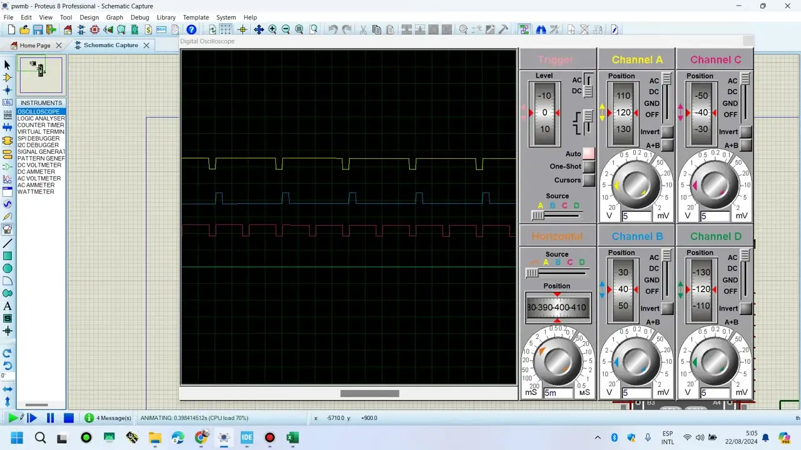

Colocamos la BlackPill, unimos el reset y en Design > Configure Power Rails ponemos VCC/VDD en 3.3 V y pasamos VDDA a esa red.
Las salidas PA8 (pwm1) y PA11 (pwm2) van a un osciloscopio.
Repasamos qué es el PWM y dónde se usa (motores DC, servos, LEDs, fuentes conmutadas, inversores). Calculamos con una hoja de Excel el prescaler y el periodo para 50 Hz con el reloj de 16 MHz que simula Proteus, generamos la señal primero con la HAL y después con la nueva librería PWMB. En ella cada PWM es una estructura con el timer, el registro CCR y el canal, así que podemos usar cualquier timer y cualquier canal, en cualquier orden, y cambiar el ciclo útil con una sola función.

Colocamos la BlackPill, unimos el reset y en Design > Configure Power Rails ponemos VCC/VDD en 3.3 V y pasamos VDDA a esa red.
Las salidas PA8 (pwm1) y PA11 (pwm2) van a un osciloscopio.
Ponemos la frecuencia del micro (16 MHz en Proteus) y la frecuencia deseada (50 Hz). Sin prescaler el contador debería ser 320.000, más de lo que admite un timer de 16 bits (65.535). Solo TIM2 y TIM5 son de 32 bits.
Con prescaler 100 el periodo queda en 3.200, y eso también es la resolución: el PWM podrá variar de 0 a 3.200. Para 50 % de ciclo útil el registro vale 1.600.
Al micro se le carga prescaler − 1 (100-1), porque el contador arranca en cero.
En TIM1 activamos Internal Clock y elegimos los canales: CH1 y CH4 en PWM Generation (no tienen que ir en orden).
En Parameter Settings: Prescaler 100-1, Counter Period 3200, Pulse inicial 1600 en el canal 1 y 480 (15 %) en el canal 4. Activamos auto-reload preload para una frecuencia más estable.
Todos los canales de un mismo timer comparten frecuencia. Para otra frecuencia se usa otro timer.
Con la HAL hay que iniciar cada canal indicando timer y canal. Funciona, pero cambiar el ciclo útil después también exige timer y canal cada vez.
HAL_TIM_PWM_Start(&htim1, TIM_CHANNEL_1);
HAL_TIM_PWM_Start(&htim1, TIM_CHANNEL_4);Creamos Core/Libreria, copiamos PWMB.c y PWMB.h, agregamos la carpeta a los Include paths e incluimos la librería en main.c.
#include "PWMB.h"escala define el rango del valor: 100 para trabajar en porcentaje; con más resolución (3.200) se puede usar 1000.
Declaramos como extern cada timer usado y definimos cada PWM con su timer, su registro CCR y su canal.
float escala = 100; // define la escala a trabajar el pwm
// incluir los timer usados
extern TIM_HandleTypeDef htim1;
extern TIM_HandleTypeDef htim2;
// configurar cada salida pwm usada
PWMS PWM1 = {&htim1, &(TIM1->CCR1), TIM_CHANNEL_1};
PWMS PWM2 = {&htim1, &(TIM1->CCR4), TIM_CHANNEL_4};
PWMS PWM3 = {&htim2, &(TIM2->CCR2), TIM_CHANNEL_2};Si usas un timer nuevo y no lo declaras como extern, aparece el error «htim2 undeclared».
El nombre PWM1, PWM2… no tiene que coincidir con el canal: la estructura ya sabe qué timer y canal usar. Iniciamos antes del while y en el while cambiamos el ciclo útil.
/* USER CODE BEGIN 2 */
PWM_init(&PWM1);
PWM_init(&PWM2);
PWM_init(&PWM3);
/* USER CODE END 2 */
while (1)
{
PWM_valor(&PWM1, 10); // pwm y valor en la escala
PWM_valor(&PWM2, 90);
PWM_valor(&PWM3, 20);
HAL_Delay(200);
PWM_valor(&PWM1, 90);
PWM_valor(&PWM2, 10);
PWM_valor(&PWM3, 80);
HAL_Delay(200);
}En el osciloscopio vemos los dos canales de TIM1 a 50 Hz alternando entre 10 % y 90 %.
Activamos TIM2 con Internal Clock y el canal 2 en PWM (PA1). Como es otro timer, puede tener otra frecuencia: 100 Hz con prescaler 100-1 y periodo 1600.
Luego basta agregar la línea PWM3 en PWMB.c, el extern de htim2 y llamar PWM_init(&PWM3).
Ahora tenemos tres señales PWM en dos timers distintos y con canales distintos, todas manejadas con las mismas dos funciones.